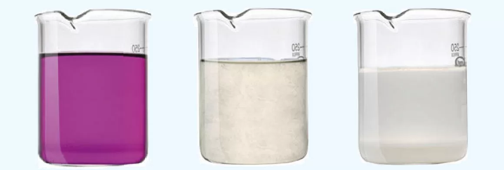

Mieszaniny
Mieszanina - to co najmniej dwie substancje zmieszane ze sobą w dowolnym stosunku.
-------------------------------------------------------------------------------------------------------------------------------------------------------------------------------------------------------------------------------------------------------------------
Mieszanina jednorodna
- nie można rozróżnić poszczególnych składników
np. cukier lub sól kuchenna rozpuszczony w wodzie, woda mineralna
Mieszanina niejednorodna
- można rozróżnić poszczególne składniki
np. ziarenka piasku w wodzie, dym, mgła
-------------------------------------------------------------------------------------------------------------------------------------------------------------------------------------------------------------------------------------------------------------------
Materią nazywamy wszystko, co ma masę i zajmuje określoną przestrzeń.
-------------------------------------------------------------------------------------------------------------------------------------------------------------------------------------------------------------------------------------------------------------------
Metody rozdzielania mieszanin niejednorodnych
Sączenie - polega na przepuszczeniu mieszaniny przez sączek, który zatrzymuje substancję stałą
Rozdzielanie za pomocą magnesu - polega na przyciągnieciu przez magnes jednego ze składników.
Dekantacja - polega na oddzieleniu składników mieszaniny przez zlanie cieczy znad osadu utworzonego
przez ciało stałe, które opadło na dno.
Rozdzielanie za pomocą rozdzielacza - polega na zlaniu cieczy o większej gęstości, a
W rozdzielaczu zostaje ciesz o mniejszej gęstości.
-------------------------------------------------------------------------------------------------------------------------------------------------------------------------------------------------------------------------------------------------------------------
Metody rozdzielania mieszanin jednorodnych
Krystalizacja jest procesem powstawania kryształów w roztworach, ponieważ rozpuszczalność większości soli maleje
wraz ze spadkiem temperatury roztworu, krystalizację można przeprowadzić przez jego schłodzenie.
Destylacja to rozdzielanie ciekłej mieszaniny poprzez odparowanie, a następnie skroplenie jej składników.
-------------------------------------------------------------------------------------------------------------------------------------------------------------------------------------------------------------------------------------------------------------------
Chromatografia - stosowana w laboratoriach, w tej metodzie składniki mieszaniny, przemieszczające się
względem fazy nieruchomej, rozdzielają się dzięki różnicom w oddziaływaniu między cząsteczkami poszczególnych składników
mieszaniny i fazą nieruchomą.
Ekstrakcja - polega na wymywaniu rozpuszczalnikiem pożądnych składników z mieszaniny
stałej lub ciekłej.
-------------------------------------------------------------------------------------------------------------------------------------------------------------------------------------------------------------------------------------------------------------------
Węgiel i Kwarc
SiO2 = KwarcCaCO3 = Kalcyt
Węglan wapnia występuje w przyrodzie
jako kalcyt, jest głownym składnikiem
skał wapiennych: wapień, kreda, marmur
Kreda - miękka, ma małą gęstość, biała barwa
Zastosowanie: Składnik białych farb, Substancja do wapnowania gleb
Marmur - skała powstająca w warunkach wysokiej temperatury oraz ciśnienia
Zastosowanie: Material rzeźbiarski i budowlany
Wapień - biała barwa
Zastosowanie: Produkcja cementu, nawozów sztucznych
Odmiany Kwarcu w przyrodzie
-Krystaliczne (ametyst, kryształ górski, cytryn)
-Bezpostaciowe (agat, opal, krzemień)
+odmiany kwarcu stosuje się w jubilerstwie (kamienie półszlachetne)
[tlenek krzemu IV - składnik dynamitu]
-------------------------------------------------------------------------------------------------------------------------------------------------------------------------------------------------------------------------------------------------------------------
CaCO3 - Kalcyt
MgCO3 - magnezyt
CaCO3 * MgCO3 - dolomit
SiO2 - Tlenek Krzemu IV
C występuje w II i IV stopniu utlenienia a Si tylko na IV
Tlenek węgla IV powstaje podczas spalania węgla przy nieograniczonym dostępie do tlenu
C + O2 = CO2
Tlenek węgla IV jest bezbarwnym i bezwonnym gazem o geśtości większej od
gęstości powietrza. Jest niepalny, dobrze rozpuszcza się w wodzie, charakter kwasowy
Alotropia występowanie pierwistka w kilku rodzajach różniących się liczbą atomów
oraz właściwościami chemicznymi.
Węgiel i jego 5 odmian alotropowych: diament, grafit, grafen, fulereny, cyklokarbon.
Diament - najtwardszy naturalny materiał, używany jako materiał ścierny w ostrzach narzędzi
do cięcia szkła i w wiertłach.
Brylant - Oszlifowany diax, stosowany w jubilerstwie.
Grafit - miękki, nieprzezroczysty, szary, przewodzi prąd elektryczny
zastosowanie: produkcja wtygli, materiałów ognioodpornych
-------------------------------------------------------------------------------------------------------------------------------------------------------------------------------------------------------------------------------------------------------------------